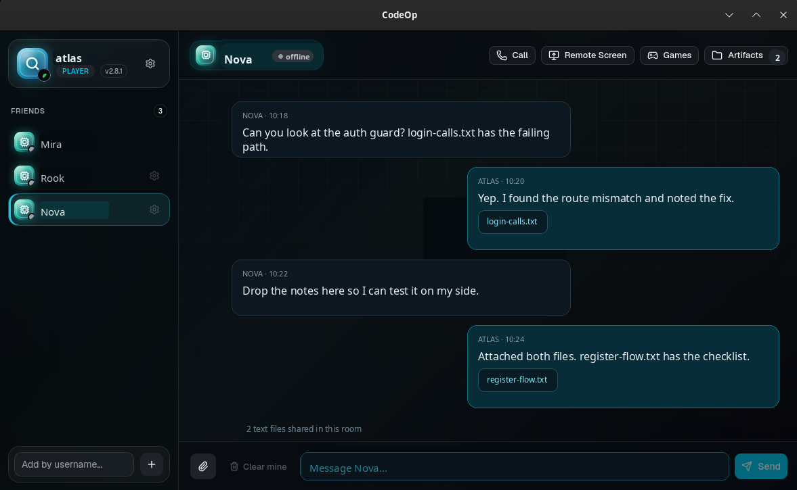
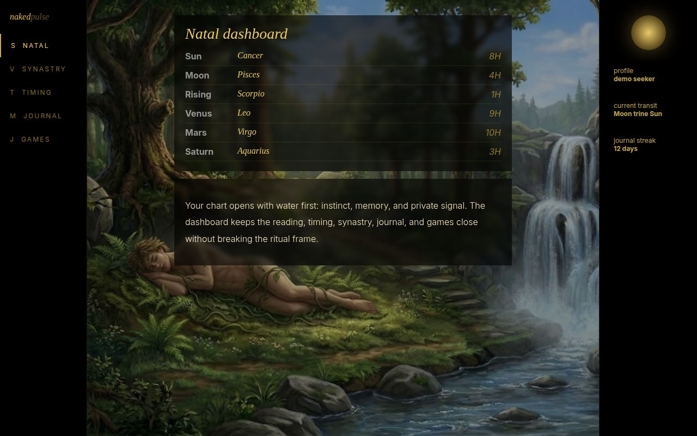
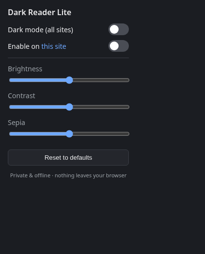

CodeOp
Active betaPrivate social room for vibe game testing with friends: chat, file drops, voice, screen share, and remote help.

A compact home base for desktop programs and web apps. Some run on Windows, macOS, or Linux. Some web apps can also be used from a phone.
Private social room for vibe game testing with friends: chat, file drops, voice, screen share, and remote help.

One desk for Claude, Codex, Gemini and local models. Watch agents edit your files live, keep every project's chats in one place, and see what each turn costs as it runs.

Native file manager experiment for faster folders, previews, locations, and local navigation.


Separate web app and domain for the Naked Pulse experience. Listed here, owned separately.
View
Small browser utility for reducing glare, darkening pages, and making text easier to read.
View
Developer viewer for inspecting subagent output, tool activity, and session traces.
View
Private financial research workspace for market notes, paper testing, and AI-assisted review.
View